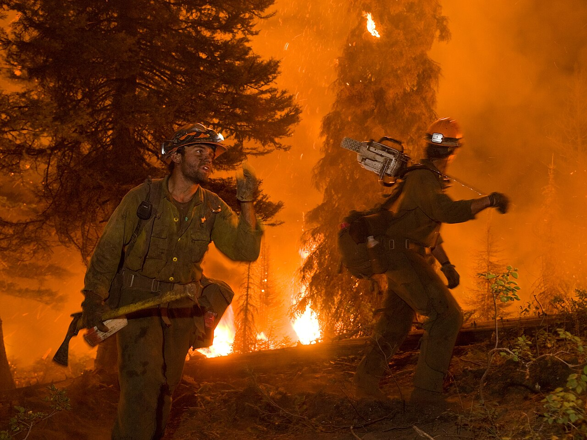

Saving Our Forests from the Wildfire Industrial Complex

Date: Wednesday, May 6 — 12:00–1:30 PM (Eastern Time)
The greatest threat to our forests may not be wildfire itself, but the misinformation surrounding it.
For decades, the logging industry has promoted the idea that widespread logging — often called “forest thinning” — is necessary to prevent wildfires and restore forests to health. These claims have helped justify extensive logging in public forests.
At the same time, new industries such as biomass energy are expanding the demand for wood, often under the claim that burning forest biomass is renewable energy and that logging reduces wildfire risk.
This webinar examines the myths and misinformation that allow profit-motivated industries to gain access to forests under the banner of wildfire prevention and forest restoration.
What You Will Learn
- Why fighting wildfire far from homes often wastes public funds
- Why making homes fire-resistant is the most effective protection
- How wildfire benefits many forest ecosystems and wildlife
- Why forests do not need to be “protected” from wildfire
- Why post-fire forests often support more biodiversity
- Why protected forests often retain more moisture and experience lower fire intensity
Why This Topic Matters
Forests provide wildlife habitat, regulate water cycles, store carbon, and stabilize climate. Yet misinformation about wildfire is often used to justify large-scale logging that degrades these ecosystems.
Understanding the science of wildfire helps citizens, advocates, and policymakers make better decisions about how forests should be managed and protected.
Who Should Attend
Forest advocates and anyone interested in understanding the real relationship between wildfire, forest ecology, and logging policy.
Recording
A recording will be available to everyone who registers.